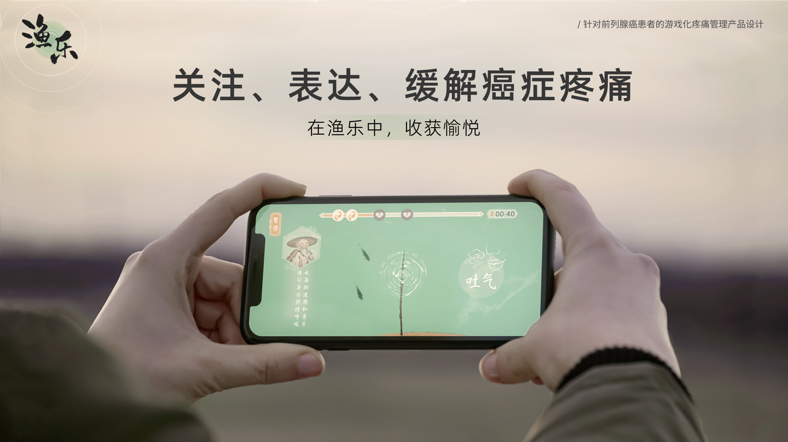
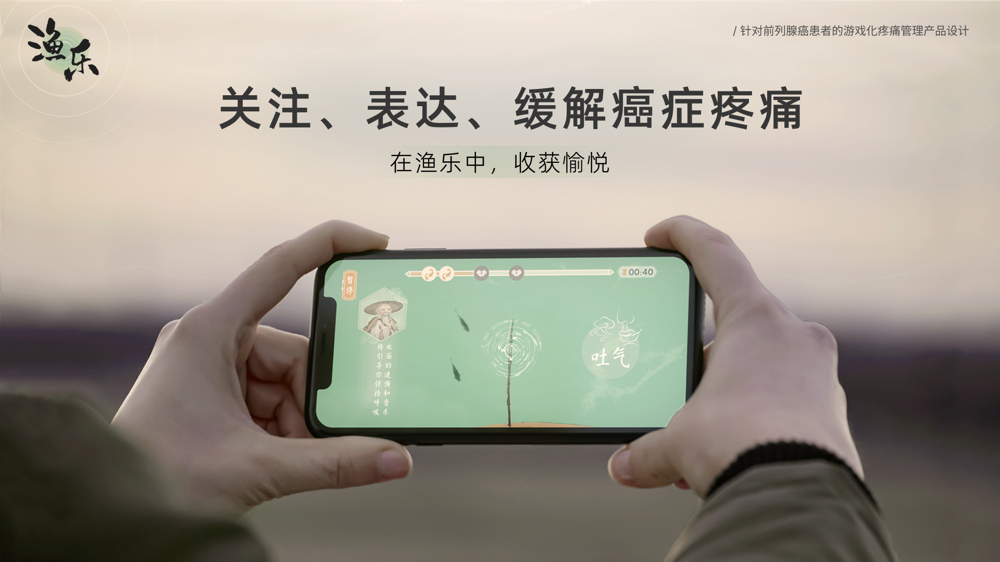

渔乐 | 疼痛管理游戏设计
- 课程小组方案
- 2022
《渔乐》是一款为癌症患者设计的疼痛管理游戏。是“数字疗法”主题课程中的小组设计方案，小组由设计同学、医学院同学和程序同学组成。我在小组中负责了游戏端的交互、美术设计，参与了unity引擎demo开发。
《渔乐》结合了CBT疗法、音乐疗法和正念疗法，从认知、行为、感官、情感四个维度帮助患者缓解疼痛，减少对止痛药的依赖、改善身体功能和情绪状态。游戏为呼吸疗法赋予更具沉浸感的玩法，以提高用户的自我效能。


 

其他信息
2022全国高校数字艺术设计大赛
I 类游戏设计 - 全国二等奖